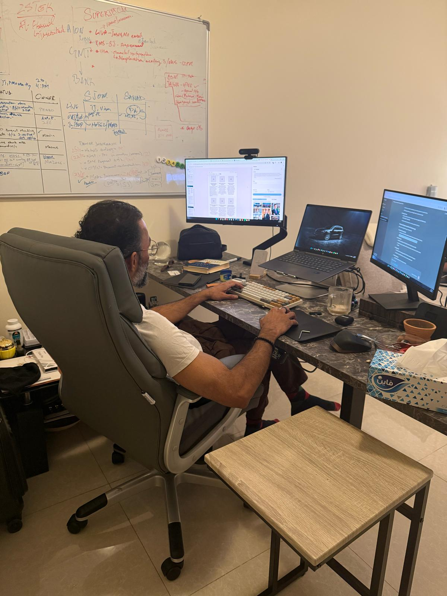

Chapter Fourteen
The Character Compass
Pioneering · Assertive · Altruistic · Intellectually Driven
"Emotional intelligence is not optional. It is the architecture of sustainable leadership."
Somewhere around the midpoint of my career, I took a TriMetrix EQ assessment. The results were not surprising to anyone who knew me, but seeing them formalized on paper was clarifying. Competitive. Restless. Intolerant of mediocrity. Empathetic. Mentoring-oriented. A set of traits that, depending on the context, could be described as either leadership strengths or personality liabilities.
The Character Compass Framework emerged from the recognition that sustainable leadership cannot be built on competence alone. Technical skills open the door. Strategic thinking earns the seat. But character — the constellation of emotional intelligence, ethical commitment, and self-awareness — is what determines whether a leader builds something lasting or simply occupies a position until the next disruption reveals the gaps.
The Four Dimensions
The Character Compass maps leadership across four dimensions: Pioneering, Assertive, Altruistic, and Intellectually Driven. These are not personality types — they are capacities that every leader possesses in varying proportions, and that can be developed with deliberate practice.
Pioneering is the willingness to move first, to accept risk, to create rather than follow. Assertive is the capacity to hold a position, to make difficult decisions, to set and enforce standards. Altruistic is the commitment to others' growth, the willingness to invest in people who may never directly benefit you. Intellectually Driven is the hunger to understand, to master complexity, to find the principle beneath the practice.
The Integration Challenge
The most effective leaders I have known — and the most effective version of myself — integrate all four dimensions. The pioneering instinct without assertiveness produces ideas that never get implemented. Assertiveness without altruism produces compliance without commitment. Intellectual drive without pioneering spirit produces analysis paralysis.
The Character Compass is not a diagnostic tool. It is a development tool. It helps leaders identify which dimensions are overdeveloped, which are underdeveloped, and what the organizational consequences of that imbalance are. In my experience, balanced Character Compass development correlates with meaningful gains in leadership effectiveness, organizational trust, and succession success.

.jpg)
"Crisis doesn't build character. It reveals it."
— Zeeshan Sabri